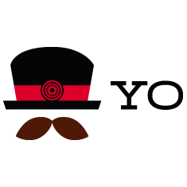

Get started and then find a generator for your webapp. Generators are available for Angular, Backbone, React, Polymer and over 5600+ other projects.
One-line install using npm:
npm install -g yo
What's Yeoman?
Yeoman helps you to kickstart new projects, prescribing best practices and tools to help you stay productive.
To do so, we provide a generator ecosystem. A generator is basically a plugin that can be run with the `yo` command to scaffold complete projects or useful parts.
Through our official Generators, we promote the "Yeoman workflow". This workflow is a robust and opinionated client-side stack, comprising tools and frameworks that can help developers quickly build beautiful web applications. We take care of providing everything needed to get started without any of the normal headaches associated with a manual setup.
With a modular architecture that can scale out of the box, we leverage the success and lessons learned from several open-source communities to ensure the stack developers use is as intelligent as possible.
As firm believers in good documentation and well thought out build processes, Yeoman includes support for linting, testing, minification and much more, so developers can focus on solutions rather than worrying about the little things.
Tools
The Yeoman workflow comprises three types of tools for improving your productivity and satisfaction when building a web app: the scaffolding tool (yo), the build tool (Gulp, Grunt etc) and the package manager (like npm and Bower).
- yo scaffolds out a new application, writing your build configuration (e.g Gulpfile) and pulling in relevant build tasks and package manager dependencies (e.g npm) that you might need for your build.

All three of these tools are developed and maintained separately, but work well together as part of our prescribed workflow for keeping you effective.
Your Clue here!
A query language for APIs(<= Find this) and a runtime for fulfilling those queries with your existing data. It provides a complete and understandable description of the data in your API, gives clients the power to ask for exactly what they need and nothing more, makes it easier to evolve APIs over time, and enables powerful developer tools.